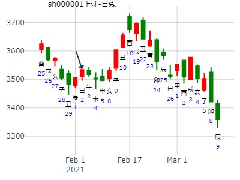
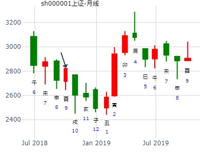
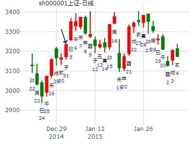

主帖标题: 试测上证2021.2.1庚辰一-2.5甲申哪日顶？
上证2021.2.1庚辰一-2.5甲申哪日顶？
公历起卦时间：2021年2月2日8时51分 (电脑自动)
干支：庚子年 己丑月 辛巳日 壬辰时 （日空：申酉）
巽宫：山雷颐 (游魂) 坤宫：地雷复 (六合)
螣蛇 兄弟丙寅木 ▅▅▅▅▅ ○→ 官鬼癸酉金 ▅▅ ▅▅
勾陈 子孙辛巳火 父母丙子水 ▅▅ ▅▅ 父母癸亥水 ▅▅ ▅▅
朱雀 妻财丙戌土 ▅▅ ▅▅ 世 妻财癸丑土 ▅▅ ▅▅ 应
青龙 官鬼辛酉金 妻财庚辰土 ▅▅ ▅▅ 妻财庚辰土 ▅▅ ▅▅
玄武 兄弟庚寅木 ▅▅ ▅▅ 兄弟庚寅木 ▅▅ ▅▅
白虎 父母庚子水 ▅▅▅▅▅ 应 父母庚子水 ▅▅▅▅▅ 世

主帖标题: 000790未来走势？
占事：2008.03.26－28日000790华神集团走势？ 起法：手动摇卦
公历：2008年3月25日21时49分 开元财经 六爻排盘系统期货版
干支：戊子年 乙卯月 甲子日 乙亥时 (旬空：戌亥)
巽宫：山雷颐（游魂） 坤宫：地雷复（六合）
六神 伏 神 【本 卦】 【变 卦】
玄武 ▅▅▅▅▅ 兄弟丙寅木 ○→ ▅▅ ▅▅ 官鬼癸酉金
白虎 子孙辛巳火 ▅▅ ▅▅ 父母丙子水 ▅▅ ▅▅ 父母癸亥水
螣蛇 ▅▅ ▅▅ 妻财丙戌土 世 ▅▅ ▅▅ 妻财癸丑土 应
勾陈 官鬼辛酉金 ▅▅ ▅▅ 妻财庚辰土 ▅▅ ▅▅ 妻财庚辰土
朱雀 ▅▅ ▅▅ 兄弟庚寅木 ▅▅ ▅▅ 兄弟庚寅木
青龙 ▅▅▅▅▅ 父母庚子水 应 ▅▅▅▅▅ 父母庚子水 世
招财公主钱币卦?女占事：600635未来半年走势？
公历起卦时间：2015年3月6日22时53分
干支：乙未年 己卯月 辛巳日 己亥时 （日空：申酉）
神煞：驿马－亥 桃花－午 日禄－酉 贵人－寅，午
巽宫：山雷颐 (游魂) 坤宫：地雷复 (六合)
六神 伏神 本 卦 变 卦
腾蛇 兄弟丙寅木 ▅▅▅▅▅ ○→ 官鬼癸酉金 ▅▅ ▅▅
勾陈 子孙辛巳火 父母丙子水 ▅▅ ▅▅ 父母癸亥水 ▅▅ ▅▅
朱雀 妻财丙戌土 ▅▅ ▅▅ 世 妻财癸丑土 ▅▅ ▅▅ 应
青龙 官鬼辛酉金 妻财庚辰土 ▅▅ ▅▅ 妻财庚辰土 ▅▅ ▅▅
玄武 兄弟庚寅木 ▅▅ ▅▅ 兄弟庚寅木 ▅▅ ▅▅
白虎 父母庚子水 ▅▅▅▅▅ 应 父母庚子水 ▅▅▅▅▅ 世
上九：由颐，厉吉，利涉大川。象曰：由颐厉吉，大有庆也。
主帖标题: 2021年4月大盘涨跌卦
占事：2021年4月大盘涨跌
公历起卦时间：2021年3月31日15时45分 (手工指定)
干支：辛丑年 辛卯月 戊寅日 庚申时 （日空：申酉）
巽宫：山雷颐 (游魂) 坤宫：地雷复 (六合)
六神 伏神 本 卦 变 卦
朱雀 兄弟丙寅木 ▅▅▅▅▅ ○→ 官鬼癸酉金 ▅▅ ▅▅
青龙 子孙辛巳火 父母丙子水 ▅▅ ▅▅ 父母癸亥水 ▅▅ ▅▅
玄武 妻财丙戌土 ▅▅ ▅▅ 世 妻财癸丑土 ▅▅ ▅▅ 应
白虎 官鬼辛酉金 妻财庚辰土 ▅▅ ▅▅ 妻财庚辰土 ▅▅ ▅▅
螣蛇 兄弟庚寅木 ▅▅ ▅▅ 兄弟庚寅木 ▅▅ ▅▅
勾陈 父母庚子水 ▅▅▅▅▅ 应 父母庚子水 ▅▅▅▅▅ 世
主帖标题: 3.7---------3.11 上证走势
公历起卦时间：2022年3月4日7时18分 (在线摇卦)
干支：壬寅年 壬寅月 丙辰日 壬辰时 （日空：子丑）
巽宫：山雷颐 (游魂) 坤宫：地雷复 (六合)
六神 伏神 本 卦 变 卦
青龙 兄弟丙寅木 ▅▅▅▅▅ ○→ 官鬼癸酉金 ▅▅ ▅▅
玄武 子孙辛巳火 父母丙子水 ▅▅ ▅▅ 父母癸亥水 ▅▅ ▅▅
白虎 妻财丙戌土 ▅▅ ▅▅ 世 妻财癸丑土 ▅▅ ▅▅ 应
螣蛇 官鬼辛酉金 妻财庚辰土 ▅▅ ▅▅ 妻财庚辰土 ▅▅ ▅▅
勾陈 兄弟庚寅木 ▅▅ ▅▅ 兄弟庚寅木 ▅▅ ▅▅
朱雀 父母庚子水 ▅▅▅▅▅ 应 父母庚子水 ▅▅▅▅▅ 世
2， 陈真老师
http://bbs.64gua.com/forum.phpm ... &extra=page%3D1
性别：男 占测人生年：1980
公元：2022年3月4日7时59分
干支：壬寅年 壬寅月 丙辰日 壬辰时 (子丑)
立春：2022/2/4 4:58:00 惊蛰：2022/3/5 22:42:00
颐 卦 坤 卦 复 卦 大过卦 颐 卦
▆▆▆ ☉ ▆ ▆ ▆ ▆ ▆ ▆ ▆▆▆
用 ▆ ▆ ▆ ▆ ▆ ▆ ▆▆▆ ▆ ▆
▆ ▆ ▆ ▆ ▆ ▆ ▆▆▆ ▆ ▆
▆ ▆ ▆ ▆ ▆ ▆ ▆▆▆ ▆ ▆
体 ▆ ▆ ▆ ▆ ▆ ▆ ▆▆▆ ▆ ▆
▆▆▆ ▆ ▆ ▆▆▆ ▆ ▆ ▆▆▆
[本卦] [互卦] [变卦] [错卦] [综卦]
主帖标题: 破玄关，传奇留迹——操盘纪亊
农发种业600313，测其后势，是否有机会买入
公历起卦时间：2022年3月28日8时22分 (按
干支：壬寅年 癸卯月 庚辰日 庚辰时 （日空：申酉）
巽宫：山雷颐 (游魂) 坤宫：地雷复 (六合)
六神 伏神 本 卦 变 卦
螣蛇 兄弟丙寅木 ▅▅▅▅▅ ○→ 官鬼癸酉金 ▅▅ ▅▅
勾陈 子孙辛巳火 父母丙子水 ▅▅ ▅▅ 父母癸亥水 ▅▅ ▅▅
朱雀 妻财丙戌土 ▅▅ ▅▅ 世 妻财癸丑土 ▅▅ ▅▅ 应
青龙 官鬼辛酉金 妻财庚辰土 ▅▅ ▅▅ 妻财庚辰土 ▅▅ ▅▅
玄武 兄弟庚寅木 ▅▅ ▅▅ 兄弟庚寅木 ▅▅ ▅▅
白虎 父母庚子水 ▅▅▅▅▅ 应 父母庚子水 ▅▅▅▅▅ 世
主帖标题: 下周沪市运行！
公历时间：2021年4月18日20时28分
干 支：辛丑年 壬辰月 丙申日 戊戌时
旬 空：辰巳 午未 辰巳 辰巳
神 煞：驿马─寅 桃花─酉 日禄─巳 贵人─酉，亥
中国预测网纳甲六爻排盘
巽宫：山雷颐（游魂） 坤宫：地雷复（六合）
青龙 ▄▄▄▄▄ 兄弟丙寅木 ○ ▄▄ ▄▄ 官鬼癸酉金
玄武 子孙辛巳火 ▄▄ ▄▄ 父母丙子水 ▄▄ ▄▄ 父母癸亥水
白虎 ▄▄ ▄▄ 妻财丙戌土 世 ▄▄ ▄▄ 妻财癸丑土 应
螣蛇 官鬼辛酉金 ▄▄ ▄▄ 妻财庚辰土 ▄▄ ▄▄ 妻财庚辰土
勾陈 ▄▄ ▄▄ 兄弟庚寅木 ▄▄ ▄▄ 兄弟庚寅木
朱雀 ▄▄▄▄▄ 父母庚子水 应 ▄▄▄▄▄ 父母庚子水 世
辰月419周卦，下周沪市运行！颐之复。兄化官寅化酉，值酉日大涨。
公历时间：2021年4月18日20时28分
干 支：辛丑年 壬辰月 丙申日 戊戌时
旬 空：辰巳 午未 辰巳 辰巳
巽宫：山雷颐（游魂） 坤宫：地雷复（六合）
六神 伏 神 【本 卦】 【变 卦】
青龙 ▄▄▄▄▄ 兄弟丙寅木 ○ ▄▄ ▄▄ 官鬼癸酉金
玄武 子孙辛巳火 ▄▄ ▄▄ 父母丙子水 ▄▄ ▄▄ 父母癸亥水
白虎 ▄▄ ▄▄ 妻财丙戌土 世 ▄▄ ▄▄ 妻财癸丑土 应
螣蛇 官鬼辛酉金 ▄▄ ▄▄ 妻财庚辰土 ▄▄ ▄▄ 妻财庚辰土
勾陈 ▄▄ ▄▄ 兄弟庚寅木 ▄▄ ▄▄ 兄弟庚寅木
朱雀 ▄▄▄▄▄ 父母庚子水 应 ▄▄▄▄▄ 父母庚子水 世
参看另一卦：睽之履。4.19——4.23 上证走势。。。一字占
2021年4月17日21时17分 (手工指定) 作者：精武门陈真
干支：辛丑年 壬辰月 乙未日 丁亥时 （日空：辰巳）
艮宫：火泽睽 艮宫：天泽履
六神 伏神 本 卦 变 卦
玄武 父母己巳火 ▅▅▅▅▅ 兄弟壬戌土 ▅▅▅▅▅
白虎 妻财丙子水 兄弟己未土 ▅▅ ▅▅ ╳→ 子孙壬申金 ▅▅▅▅▅ 世
螣蛇 子孙己酉金 ▅▅▅▅▅ 世 父母壬午火 ▅▅▅▅▅
勾陈 兄弟丁丑土 ▅▅ ▅▅ 兄弟丁丑土 ▅▅ ▅▅
朱雀 官鬼丁卯木 ▅▅▅▅▅ 官鬼丁卯木 ▅▅▅▅▅ 应
青龙 父母丁巳火 ▅▅▅▅▅ 应 父母丁巳火 ▅▅▅▅▅
主帖标题: 多待一会，不至卖飞，测股传奇——操盘纪实
是不是改潜伏学大教育000526了，测之
公历起卦时间：2022年4月1日8时15分 (按
干支：壬寅年 癸卯月 甲申日 戊辰时 （日空：午未）
巽宫：山雷颐 (游魂) 坤宫：地雷复 (六合)
玄武 兄弟丙寅木 ▅▅▅▅▅ ○→ 官鬼癸酉金 ▅▅ ▅▅
白虎 子孙辛巳火 父母丙子水 ▅▅ ▅▅ 父母癸亥水 ▅▅ ▅▅
螣蛇 妻财丙戌土 ▅▅ ▅▅ 世 妻财癸丑土 ▅▅ ▅▅ 应
勾陈 官鬼辛酉金 妻财庚辰土 ▅▅ ▅▅ 妻财庚辰土 ▅▅ ▅▅
朱雀 兄弟庚寅木 ▅▅ ▅▅ 兄弟庚寅木 ▅▅ ▅▅
青龙 父母庚子水 ▅▅▅▅▅ 应 父母庚子水 ▅▅▅▅▅ 世
主帖标题: 2017年7月大盘涨跌卦
占事：2017年7月大盘涨跌？
公公历起卦时间：2017年6月30日15时59分 (手工指定)
干支：丁酉年 丙午月 戊子日 庚申时 （日空：午未）
巽宫：山雷颐 (游魂) 坤宫：地雷复 (六合)
六神 伏神 本 卦 变 卦
朱雀 兄弟丙寅木 ▅▅▅▅▅ ○→ 官鬼癸酉金 ▅▅ ▅▅
青龙 子孙辛巳火 父母丙子水 ▅▅ ▅▅ 父母癸亥水 ▅▅ ▅▅
玄武 妻财丙戌土 ▅▅ ▅▅ 世 妻财癸丑土 ▅▅ ▅▅ 应
白虎 官鬼辛酉金 妻财庚辰土 ▅▅ ▅▅ 妻财庚辰土 ▅▅ ▅▅
腾蛇 兄弟庚寅木 ▅▅ ▅▅ 兄弟庚寅木 ▅▅ ▅▅
勾陈 父母庚子水 ▅▅▅▅▅ 应 父母庚子水 ▅▅▅▅▅ 世
主帖标题: 试测上证庚子年辰巳午未月哪月是底？
试测上证庚子年午未月哪月是底？
公历起卦时间：2020年6月17日8时54分 (按
干支：庚子年 壬午月 辛卯日 壬辰时 （日空：午未）
巽宫：山雷颐 (游魂) 坤宫：地雷复 (六合)
六神 伏神 本 卦 变 卦
螣蛇 兄弟丙寅木 ▅▅▅▅▅ ○→ 官鬼癸酉金 ▅▅ ▅▅
勾陈 子孙辛巳火 父母丙子水 ▅▅ ▅▅ 父母癸亥水 ▅▅ ▅▅
朱雀 妻财丙戌土 ▅▅ ▅▅ 世 妻财癸丑土 ▅▅ ▅▅ 应
青龙 官鬼辛酉金 妻财庚辰土 ▅▅ ▅▅ 妻财庚辰土 ▅▅ ▅▅
玄武 兄弟庚寅木 ▅▅ ▅▅ 兄弟庚寅木 ▅▅ ▅▅
白虎 父母庚子水 ▅▅▅▅▅ 应 父母庚子水 ▅▅▅▅▅ 世
2021华兰生物二周走势。颐之复，兄化官，出空挨宰经典.md
时间: 2021-06-28
干支: 辛丑年甲午月丁未日 (旬空: 寅卯 )
山雷颐(游魂) 地雷复
青龙 ▅▅▅▅▅ 兄弟寅木 Ｏ→ ▅▅ ▅▅ 官鬼酉金
玄武 子孙巳火▅▅ ▅▅ 父母子水 ▅▅ ▅▅ 父母亥水
白虎 ▅▅ ▅▅ 妻财戌土 世 ▅▅ ▅▅ 妻财丑土 应
腾蛇 官鬼酉金▅▅ ▅▅ 妻财辰土 ▅▅ ▅▅ 妻财辰土
勾陈 ▅▅ ▅▅ 兄弟寅木 ▅▅ ▅▅ 兄弟寅木
朱雀 ▅▅▅▅▅ 父母子水 应 ▅▅▅▅▅ 父母子水 世
主帖标题: 7月30日-8月3日大盘涨跌卦
占事：7月30日-8月3日大盘涨跌？
公历起卦时间：2012年7月27日16时42分 (手工指定)
干支：壬辰年 丁未月 己丑日 壬申时 （日空：午未）
巽宫：山雷颐 (游魂) 坤宫：地雷复 (六合)
六神 伏神 本 卦 变 卦
勾陈 兄弟丙寅木 ▅▅▅▅▅ ○→ 官鬼癸酉金 ▅▅ ▅▅
朱雀 子孙辛巳火 父母丙子水 ▅▅ ▅▅ 父母癸亥水 ▅▅ ▅▅
青龙 妻财丙戌土 ▅▅ ▅▅ 世 妻财癸丑土 ▅▅ ▅▅ 应
玄武 官鬼辛酉金 妻财庚辰土 ▅▅ ▅▅ 妻财庚辰土 ▅▅ ▅▅
白虎 兄弟庚寅木 ▅▅ ▅▅ 兄弟庚寅木 ▅▅ ▅▅
腾蛇 父母庚子水 ▅▅▅▅▅ 应 父母庚子水 ▅▅▅▅▅ 世
主帖标题: 黄金板块的股票7---8月行情大家看看
公历时间：2016年7月19日8时20分 农历时间：丙申年 六月十六日辰时
干 支：丙申年 乙未月 壬寅日 甲辰时
旬 空：辰巳 辰巳 辰巳 寅卯
巽宫：山雷颐（游魂） 坤宫：地雷复（六合）
六神 伏 神 【本 卦】 【变 卦】
白虎 ▄▄▄▄▄ 兄弟丙寅木 ○ ▄▄ ▄▄ 官鬼癸酉金
螣蛇 子孙辛巳火 ▄▄ ▄▄ 父母丙子水 ▄▄ ▄▄ 父母癸亥水
勾陈 ▄▄ ▄▄ 妻财丙戌土 世 ▄▄ ▄▄ 妻财癸丑土 应
朱雀 官鬼辛酉金 ▄▄ ▄▄ 妻财庚辰土 ▄▄ ▄▄ 妻财庚辰土
青龙 ▄▄ ▄▄ 兄弟庚寅木 ▄▄ ▄▄ 兄弟庚寅木
玄武 ▄▄▄▄▄ 父母庚子水 应 ▄▄▄▄▄ 父母庚子水 世
大盘未月涨跌？
时间: 2019-07-09 13时45分
干支: 己亥年辛未月丁未日 (旬空: 寅卯 )
山雷颐(游魂) 地雷复
六神 伏神 本 卦 变 卦
青龙 ▅▅▅▅▅ 兄弟寅木 Ｏ→ ▅▅ ▅▅ 官鬼酉金
玄武 子孙巳火▅▅ ▅▅ 父母子水 ▅▅ ▅▅ 父母亥水
白虎 ▅▅ ▅▅ 妻财戌土 世 ▅▅ ▅▅ 妻财丑土 应
腾蛇 官鬼酉金▅▅ ▅▅ 妻财辰土 ▅▅ ▅▅ 妻财辰土
勾陈 ▅▅ ▅▅ 兄弟寅木 ▅▅ ▅▅ 兄弟寅木
朱雀 ▅▅▅▅▅ 父母子水 应 ▅▅▅▅▅ 父母子水 世
18年8月大盘半年卦。颐之复。
用神得月旬空。仍是制不住兄。还得等卯冲酉冲实
时间: 2018-09-18
干支: 戊戌年辛酉月癸丑日 (旬空: 寅卯 )
山雷颐(游魂) 地雷复
六神 伏神 本 卦 变 卦
白虎 ▅▅▅▅▅ 兄弟寅木 Ｏ→ ▅▅ ▅▅ 官鬼酉金
腾蛇 子孙巳火▅▅ ▅▅ 父母子水 ▅▅ ▅▅ 父母亥水
勾陈 ▅▅ ▅▅ 妻财戌土 世 ▅▅ ▅▅ 妻财丑土 应
朱雀 官鬼酉金▅▅ ▅▅ 妻财辰土 ▅▅ ▅▅ 妻财辰土
青龙 ▅▅ ▅▅ 兄弟寅木 ▅▅ ▅▅ 兄弟寅木
玄武 ▅▅▅▅▅ 父母子水 应 ▅▅▅▅▅ 父母子水 世

主帖标题: 10月31日的上证指数
排卦：元亨利贞网六爻在线排盘系统 http://www.china95.net
公历起卦时间：2012年10月31日7时20分 (按农历时间起卦)
干支：壬辰年 庚戌月 乙丑日 庚辰时 （日空：戌亥）
巽宫：山雷颐 (游魂) 坤宫：地雷复 (六合)
玄武 兄弟丙寅木 ▅▅▅▅▅ ○→ 官鬼癸酉金 ▅▅ ▅▅
白虎 子孙辛巳火 父母丙子水 ▅▅ ▅▅ 父母癸亥水 ▅▅ ▅▅
腾蛇 妻财丙戌土 ▅▅ ▅▅ 世 妻财癸丑土 ▅▅ ▅▅ 应
勾陈 官鬼辛酉金 妻财庚辰土 ▅▅ ▅▅ 妻财庚辰土 ▅▅ ▅▅
朱雀 兄弟庚寅木 ▅▅ ▅▅ 兄弟庚寅木 ▅▅ ▅▅
青龙 父母庚子水 ▅▅▅▅▅ 应 父母庚子水 ▅▅▅▅▅ 世
润和软件到下周五-金-自动卦
时间: 2024-10-10
干支: 甲辰年甲戌月丁未日 (旬空: 寅卯 )
山雷颐(游魂) 地雷复
六神 伏神 本 卦 变 卦
青龙 ▅▅▅▅▅ 兄弟寅木 Ｏ→ ▅▅ ▅▅ 官鬼酉金
玄武 子孙巳火▅▅ ▅▅ 父母子水 ▅▅ ▅▅ 父母亥水
白虎 ▅▅ ▅▅ 妻财戌土 世 ▅▅ ▅▅ 妻财丑土 应
腾蛇 官鬼酉金▅▅ ▅▅ 妻财辰土 ▅▅ ▅▅ 妻财辰土
勾陈 ▅▅ ▅▅ 兄弟寅木 ▅▅ ▅▅ 兄弟寅木
朱雀 ▅▅▅▅▅ 父母子水 应 ▅▅▅▅▅ 父母子水 世
主帖标题: 11月21-25日大盘涨跌卦
占事： 11月21-25日大盘涨跌？
公历起卦时间：2011年11月18日15时15分 (手工指定)
干支：辛卯年 己亥月 丁丑日 戊申时 （日空：申酉）
巽宫：山雷颐 (游魂) 坤宫：地雷复 (六合)
青龙 兄弟丙寅木 ▅▅▅▅▅ ○→ 官鬼癸酉金 ▅▅ ▅▅
玄武 子孙辛巳火 父母丙子水 ▅▅ ▅▅ 父母癸亥水 ▅▅ ▅▅
白虎 妻财丙戌土 ▅▅ ▅▅ 世 妻财癸丑土 ▅▅ ▅▅ 应
腾蛇 官鬼辛酉金 妻财庚辰土 ▅▅ ▅▅ 妻财庚辰土 ▅▅ ▅▅
勾陈 兄弟庚寅木 ▅▅ ▅▅ 兄弟庚寅木 ▅▅ ▅▅
朱雀 父母庚子水 ▅▅▅▅▅ 应 父母庚子水 ▅▅▅▅▅ 世

周易天地六爻排卦系统
男 占事: 玄奥软件手摇预测12月沪市走势
起卦方式：手工指定 周易天地www.64gua.com六爻线上排盘系统
公历时间：2014年11月29日23时48分
干支：甲午年 乙亥月 乙巳日 丙子时
旬空：辰巳 申酉 寅卯 申酉
巽宫：山雷颐（游魂） 坤宫：地雷复（六合）
六神 伏 神 【本 卦】 【变 卦】
玄武 ▄▄▄▄▄ 兄弟丙寅木 O-> ▄▄ ▄▄ 官鬼癸酉金
白虎 子孙辛巳火 ▄▄ ▄▄ 父母丙子水 ▄▄ ▄▄ 父母癸亥水
螣蛇 ▄▄ ▄▄ 妻财丙戌土 世 ▄▄ ▄▄ 妻财癸丑土 应
勾陈 官鬼辛酉金 ▄▄ ▄▄ 妻财庚辰土 ▄▄ ▄▄ 妻财庚辰土
朱雀 ▄▄ ▄▄ 兄弟庚寅木 ▄▄ ▄▄ 兄弟庚寅木
青龙 ▄▄▄▄▄ 父母庚子水 应 ▄▄▄▄▄ 父母庚子水 世
上九：由颐，厉吉，利涉大川。 象曰：由颐厉吉，大有庆也。
综合分析：12月为震荡行情（没有单边行情），总体略跌，宜高抛低吸，短线操作，以上仅供参考呦
主题：福安药业300194下半年的走势
己亥 甲戌 丁未 甲辰 (日空:寅卯）己亥年十月初十(2019/11/06 08:52:57)
山雷颐 地雷复
青龙 兄弟壬寅 ○ 官鬼己酉 ∥
子孙乙巳：玄武 父母庚子 ∥ 父母辛亥 ∥
白虎 妻财庚戌 ∥ 巽 妻财辛丑 ∥ 应
官鬼己酉：腾蛇 妻财甲辰 ∥ 妻财甲辰 ∥
勾陈 兄弟壬寅 ∥ 兄弟壬寅 ∥
朱雀 父母庚子 ／ 应 父母庚子 ／ 坤
主帖标题: 2015年1月大盘涨跌卦
占事：2015年1月大盘涨跌？
公历起卦时间：2014年12月31日16时39分 (手工指定)
干支：甲午年 丙子月 丙子日 丙申时 （日空：申酉）
巽宫：山雷颐 (游魂) 坤宫：地雷复 (六合)
青龙 兄弟丙寅木 ▅▅▅▅▅ ○→ 官鬼癸酉金 ▅▅ ▅▅
玄武 子孙辛巳火 父母丙子水 ▅▅ ▅▅ 父母癸亥水 ▅▅ ▅▅
白虎 妻财丙戌土 ▅▅ ▅▅ 世 妻财癸丑土 ▅▅ ▅▅ 应
腾蛇 官鬼辛酉金 妻财庚辰土 ▅▅ ▅▅ 妻财庚辰土 ▅▅ ▅▅
勾陈 兄弟庚寅木 ▅▅ ▅▅ 兄弟庚寅木 ▅▅ ▅▅
朱雀 父母庚子水 ▅▅▅▅▅ 应 父母庚子水 ▅▅▅▅▅ 世

2016年12月15日8时34分 周记预测
干 支：丙申年 庚子月 辛未日 壬辰时
旬 空：辰巳 辰巳 (戌亥) 午未
巽宫：山雷颐（游魂） 坤宫：地雷复（六合）
六神 伏 神 【本 卦】 【变 卦】
螣蛇 ▄▄▄▄▄ 兄弟丙寅木 O-> ▄▄ ▄▄ 官鬼癸酉金
勾陈 子孙辛巳火 ▄▄ ▄▄ 父母丙子水 ▄▄ ▄▄ 父母癸亥水
朱雀 ▄▄ ▄▄ 妻财丙戌土 世 ▄▄ ▄▄ 妻财癸丑土 应
青龙 官鬼辛酉金 ▄▄ ▄▄ 妻财庚辰土 ▄▄ ▄▄ 妻财庚辰土
玄武 ▄▄ ▄▄ 兄弟庚寅木 ▄▄ ▄▄ 兄弟庚寅木
白虎 ▄▄▄▄▄ 父母庚子水 应 ▄▄▄▄▄ 父母庚子水 世
上证绿，深圳红。